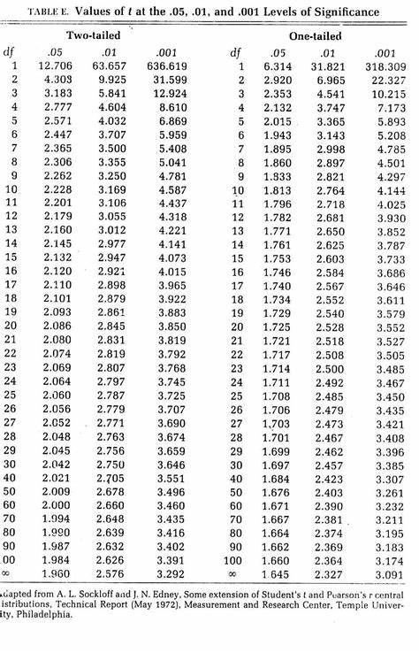
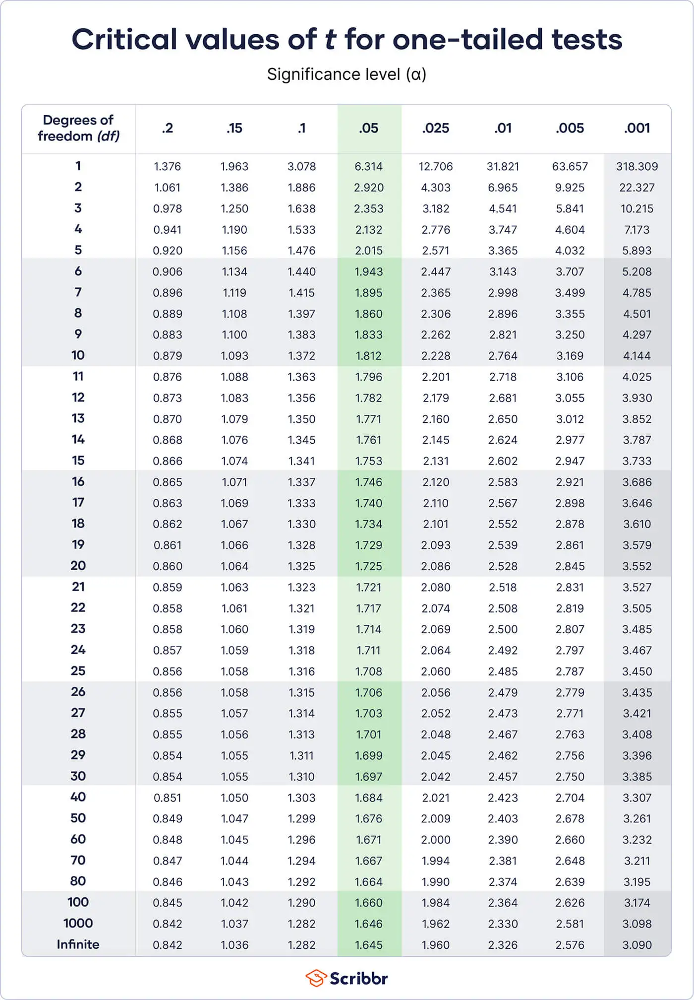

Remember in statistics we are estimating sometimes. Some numbers may be rounded up or down.
Like margin of error is approximated to .04 from .035
1. Mendelian Genetics When Mendel conducted his famous genetics experiments with
peas, one sample of offspring consisted of 428 green peas and 152 yellow peas. Based on
his theory of genetics, Mendel expected that 25% of the offspring peas would be yellow.
Find a 95% confidence interval estimate of the percentage of yellow peas.
a. Find the point estimate.
results
After we get the point estimate we move on to the next step
b. Find the critical value(s).
To solve this we need a chart:
There are better charts.

We also need to know the degrees of Freedom which as Noted at the top of this page is n-1
Because we are looking for 95% we find the area of the tail(s) with this: 1-.95 = .05
Divide .05 by two for area in one tail.
Formula: (1 - CI) / 2
results
Below is another chart

In this case it is 1.96
Now that we have the critical value we can move on to step 3. Finding the margin of Error
c. Find the margin of error.
Formula: E = T * √(p̂Q̂/n)
T = critical value FOUND IN STEP 2
p̂(p Hat) = number of success
Q̂(q hat) = number of failures (1 - p̂) Very easy to find.
n = sample size
results
d. Construct the confidence interval.
This is very easy once you have E(the margin of error). Which we approximate from .035 to .04
the formula is p̂(p Hat) +- E
results
e. Based on his theory of genetics, Mendel expected that 25% of the offspring peas
would be yellow. Given that the percentage of offspring yellow peas is not 25%, do
the results contradict Mendel's theory? Why or why not?
It is not a contradiction because .25 falls into the Interval